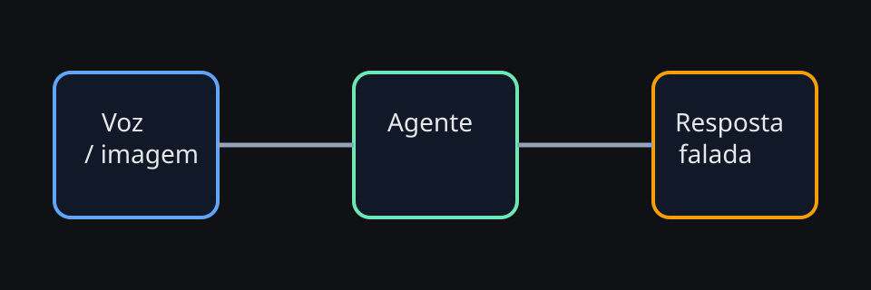

Voz parece mágica na demo. Em produção, ela é uma cadeia operacional com orçamento de latência, política de privacidade e regras de interrupção.
Agentes com voz e multimodalidade
OpenClaw pode servir muito bem em experiências faladas ou multimodais, mas só quando a operação respeita tempo de resposta, clareza conversacional e limites de exposição. O agente pode continuar sendo o mesmo; o que muda é a interface, e a interface impõe regras diferentes.
Se você tratar voz como “texto lido em voz alta”, a experiência degrada rápido. Respostas longas, atrasos de alguns segundos e confirmações ambíguas ficam muito mais irritantes quando saem de um alto-falante. Este capítulo foca no que importa para uso real: latência ponta a ponta, interrupções, fallback texto↔voz, privacidade de áudio e troubleshooting de ASR/TTS.
Diagrama — pipeline multimodal

Modelo mental: voz é uma cadeia, não um recurso isolado
Em texto, o usuário tolera esperar alguns segundos e ler um bloco maior. Em voz, ele percebe a experiência como uma sequência contínua:
- captura do áudio e detecção de fala
- transcrição ASR/STT
- montagem de contexto e decisão do agente
- execução eventual de ferramentas
- síntese TTS
- reprodução com possibilidade de interrupção
Uma cadeia ruim em qualquer ponto contamina a experiência inteira. O operador precisa olhar a jornada completa, e não apenas a qualidade do modelo principal.
Orçamento de latência ponta a ponta
Experiências faladas precisam de um orçamento explícito. Se cada camada consumir um pouco mais do que o esperado, o total fica pesado sem ninguém perceber de onde veio o atraso.
Meta de sensação
< 700 ms para algum sinal inicial é ótimo.
700 ms–1,5 s ainda parece natural em muitos fluxos.
> 2 s já exige feedback intermediário.
Onde a latência aparece
detecção de voz, upload do áudio, ASR, LLM, tool calls, TTS, fila do player, rede do dispositivo.
Como proteger UX
respostas curtas primeiro, tool calls assíncronas, streaming quando possível e confirmação progressiva por etapas.
Exemplo de decomposição operacional
captação + VAD 120 ms
upload / trânsito 150 ms
ASR 280 ms
montagem de contexto 80 ms
LLM inicial 450 ms
tool call opcional 600 ms
TTS inicial 220 ms
fila / reprodução 100 ms
-------------------------------
primeiro áudio útil 1.400 msEsse número não é “bom” ou “ruim” isoladamente. Ele precisa ser compatível com o caso de uso. Um assistente doméstico tolera mais do que um agente de suporte em call center interno. Um resumo narrado pode esperar; uma confirmação operacional não.
Heurísticas para reduzir latência sem sacrificar qualidade
- responda em duas camadas: primeiro um acknowledgment curto, depois o detalhe
- não serialize tudo: se a fala pode começar antes do relatório completo, comece
- evite tool calls desnecessárias em perguntas simples e conversacionais
- encurte o contexto para intenções faladas recorrentes
- separe modo casual e modo operacional com prompts e verbosidade diferentes
Barge-in e interrupções: o agente precisa saber ser interrompido
Uma das maiores diferenças entre texto e voz é que a pessoa quer interromper. Se o sistema insiste em terminar um monólogo, ele parece burro, mesmo quando o conteúdo está certo.
ASCII — fluxo de barge-in
Humano fala ──► player começa TTS ──► humano interrompe
│
├─► parar reprodução imediatamente
├─► marcar resposta anterior como interrompida
├─► capturar novo áudio
└─► decidir se contexto anterior entra como histórico ou ruídoBoas práticas de barge-in
- Interrupção deve pausar o player na hora, não no fim da frase.
- Respostas longas devem ser chunkadas para permitir cancelamento natural.
- O agente deve saber que foi interrompido para não retomar do ponto errado.
- Pedidos urgentes devem preemptar explicações — “para”, “cancela”, “espera”, “volta”.
Fallback texto↔voz: a experiência robusta troca de canal sem drama
Produção real precisa assumir que voz falha. Ambiente com ruído, fone ruim, sotaque, conexão móvel, output indiscreto ou simplesmente preferência do usuário podem tornar texto mais apropriado em alguns momentos.
Quando migrar para texto
erros repetidos de ASR, conteúdo sensível, instruções longas, listas densas, links, comandos que exigem precisão.
Quando manter voz
acknowledgment rápido, lembretes, storytime, hands-free, resumos curtos, follow-up de baixo risco.
Quando usar híbrido
voz para orientar e texto para detalhes: passo a passo, código, URLs, checklist e confirmação auditável.
Padrão robusto de fallback
- o agente detecta baixa confiança do ASR ou pedido ambíguo
- ele confirma em voz de forma curta: “acho que ouvi X; vou te mandar a opção em texto também”
- envia a versão textual para revisão humana
- só executa ação sensível depois da confirmação no canal apropriado
Esse desenho reduz fricção e aumenta auditabilidade. Em OpenClaw, isso conversa bem com a ideia de approval gates e com a separação entre tarefas conversacionais e ações de maior risco.
Privacidade de áudio: voz expõe mais do que parece
Áudio carrega muito mais contexto incidental do que texto. Vozes de fundo, nomes citados no ambiente, TV ligada, endereço falado casualmente e ruídos de local podem revelar informação operacional sem intenção. Por isso, privacidade em voz não é só criptografia; é também minimização.
Checklist mínimo de privacidade
- coletar o mínimo necessário de áudio e reter pelo menor tempo útil
- deixar claro quando está ouvindo e quando parou de ouvir
- evitar playback em alto-falante para conteúdo sensível
- exigir confirmação adicional para ações destrutivas ou informações privadas
- registrar em texto apenas o que é operacionalmente relevante
- diferenciar logs de transcrição, áudio bruto e eventos com políticas próprias
Arquitetura prática para voz em produção
Uma arquitetura falada robusta costuma ter pelo menos cinco camadas lógicas, mesmo que algumas fiquem no mesmo processo:
1. Captura
microfone, VAD, detecção de silêncio, cancelamento de eco e timeout de escuta.
2. Interpretação
ASR, classificação de intenção, detecção de baixa confiança e normalização do texto.
3. Orquestração
OpenClaw decide, consulta memória, usa tools e aplica regras de risco.
4. Resposta
política de resposta curta vs detalhada, chunking, TTS e modo texto complementar.
5. Observabilidade
latência por estágio, taxa de interrupção, erro de ASR/TTS e abandono por sessão.
Separar essas responsabilidades ajuda a depurar. Quando algo falha, você consegue saber se o problema veio da captura, da interpretação, da decisão do agente ou da síntese.
Métricas que realmente importam
- tempo até primeiro áudio útil
- latência total por turno
- taxa de barge-in por tipo de fluxo
- taxa de fallback para texto
- ASR confidence média e por sotaque/ambiente
- erros de TTS e tempo de geração
- abandono de conversa após respostas lentas ou longas
- taxa de confirmação extra em ações sensíveis
Sem essas métricas, times acabam discutindo impressão subjetiva. Com elas, fica claro se a UX piora por latência, ruído, prolixidade ou insegurança operacional.
Exemplo de política operacional
Receita — voz sem piorar segurança nem UX
- use modo falado enxuto por padrão: frases curtas, uma ideia principal por turno
- mande texto complementar quando houver links, listas longas, código ou instruções densas
- exija confirmação explícita em texto para tarefas destrutivas, financeiras ou administrativas
- ative barge-in real no player e registre interrupções como eventos distintos
- meça latência por estágio e estabeleça SLOs de voz, não apenas de API
- faça testes em ambientes com ruído, eco, sotaques e conexão móvel antes de escalar
Troubleshooting de ASR/TTS
Sintoma: o agente entendeu errado pedidos simples
Hipóteses: ruído, microfone ruim, VAD cortando sílabas iniciais, sotaque pouco coberto, prompt aceitando ambiguidade demais.
Ações: medir confiança do ASR, ajustar timeout de escuta, confirmar termos críticos, comparar provedores ou modelos de ASR.
Sintoma: a resposta falada parece lenta
Hipóteses: latência acumulada em tool calls, TTS só começa após a resposta completa, contexto grande demais.
Ações: enviar acknowledgment imediato, reduzir contexto, chunkar saída, revisar chamadas externas em sequência.
Sintoma: o agente fala demais
Hipóteses: persona textual reutilizada em voz, prompt sem limite de duração, falta de política de resumo primeiro.
Ações: criar instruções específicas para voz, impor limite de frases, preferir respostas em duas camadas.
Sintoma: barge-in falha ou parece atrasado
Hipóteses: player sem cancelamento imediato, buffer grande demais, chunks longos de TTS.
Ações: reduzir tamanho dos blocos falados, implementar stop prioritário, testar em rede móvel e CPU fraca.
Sintoma: conteúdo sensível saiu em voz alta
Hipóteses: ausência de classificação de sensibilidade, canal errado, política única para todos os contextos.
Ações: classificar respostas sensíveis, exigir saída textual privada, separar perfis casual e operacional.
Sintoma: a voz sintetizada soa artificial ou cansativa
Hipóteses: voz inadequada para o contexto, pontuação ruim, frases longas demais, sem pausas.
Ações: revisar texto antes do TTS, inserir pausas naturais, encurtar sentenças e escolher voz coerente com a tarefa.
Quando multimodalidade realmente agrega valor
Hands-free com contexto limitado
cozinha, oficina, rotinas domésticas ou momentos em que digitar atrapalha mais do que ajuda.
Leitura de tela ou imagem
o agente observa screenshot, câmera ou interface e devolve resumo falado do que é mais importante.
Assistência guiada
voz orienta a execução enquanto o texto entrega os detalhes auditáveis e os próximos passos.
FAQ rápido
Voz serve para tudo?
Não. Ela brilha em orientação curta, acompanhamento, hands-free e síntese. Para precisão, densidade e auditabilidade, texto continua melhor em muitos fluxos.
Preciso sempre transcrever tudo?
Não necessariamente. O ideal é registrar o que é operacionalmente relevante, e não transformar todo áudio bruto em log eterno.
Multimodalidade significa usar imagem em toda sessão?
Também não. Significa ter a capacidade de incorporar imagem, tela ou áudio quando isso aumenta a chance de entendimento correto.
O maior risco é tecnologia ruim?
Não. O maior risco costuma ser desenho ruim da experiência: sem confirmação adequada, sem fallback, sem política de privacidade e sem observabilidade por estágio.